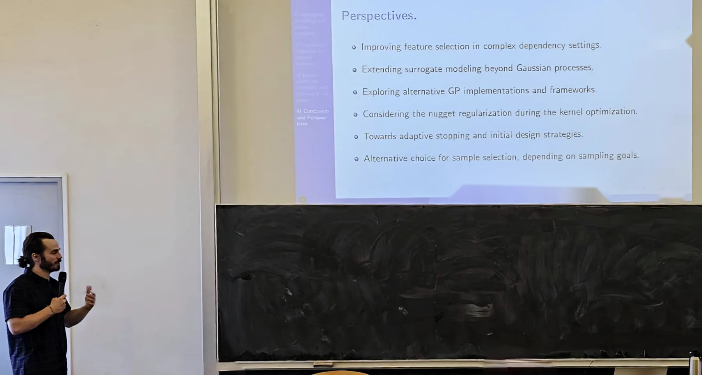

Bonjour, bienvenue sur ma page personnelle !
Je suis Damien Remot, et vous trouverez ici un résumé de mon travail, de mes projets en cours et de mon parcours ^^
Je suis Damien Remot, et vous trouverez ici un résumé de mon travail, de mes projets en cours et de mon parcours ^^

J'ai obtenu un doctorat en mathématiques appliquées en 2025. Ma thèse portait sur l'échantillonnage actif et la modélisation par modèles de substitution pour des simulateurs coûteux, en collaboration avec NXP Semiconductors et ANITI.

Mon travail se situe entre probabilités, statistiques et apprentissage automatique (machine learning), avec un goût pour transformer les méthodes en code qui tourne vraiment ! C'est ainsi qu'est né AIMS, un projet Python open source d'échantillonnage adaptatif et itératif de modèles, issu des travaux menés pendant ma thèse.
J'enseigne aujourd'hui les mathématiques et je prépare l'agrégation, un concours français de recrutement des enseignants.
En parallèle, je continue à coder, à la fois des projets logiciels pour continuer d'apprendre (le développement web, par exemple) et du code scientifique à la croisée des statistiques, de l'échantillonnage et de l'apprentissage automatique.
À venir...
À venir...
Un de mes projets vous intéresse, ou vous avez simplement envie de parler maths ?
N'hésitez pas à me contacter via LinkedIn ou à l'adresse damien.remot@outlook.fr, je suis toujours heureux d'échanger des idées et/ou de collaborer ^^
Mon code, y compris celui d'AIMS, se trouve sur ma page GitHub.
Vous cherchez des cours particuliers de maths ? Consultez ma page de cours particuliers.